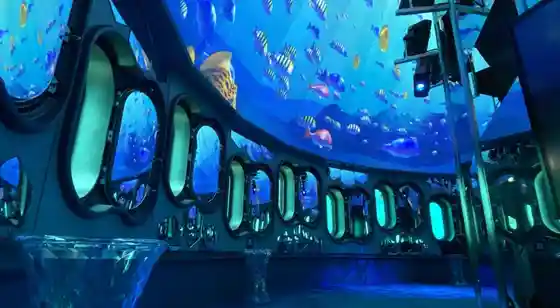
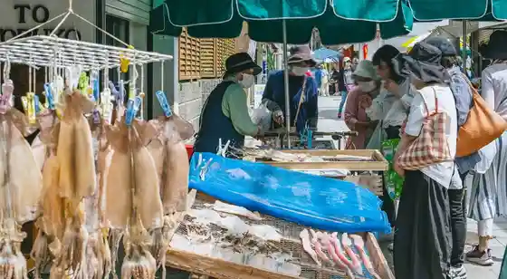
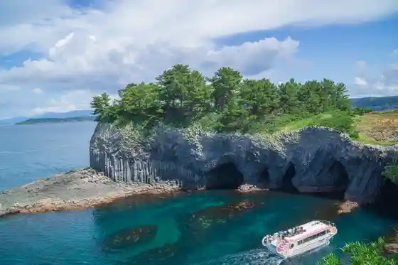
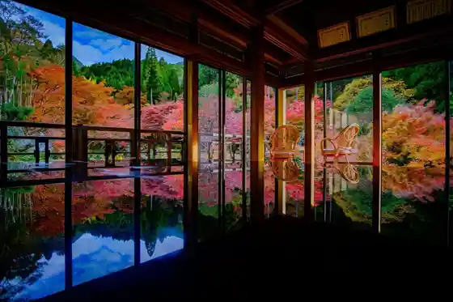

Genkai Kaichu Temboto
Karatsu, Saga · 090-3464-5337 · Official / source link

Yobuko no Asa City
Karatsu, Saga · 0955-82-3426 · Official / source link

Nanatsu Kama
Karatsu, Saga · 0955-74-3355 · Official / source link

Kankyo Geijutsu Forest
Karatsu, Saga · 0955-63-2433 · Official / source link

Hato Misaki
Karatsu, Saga · 0955-51-1052 · Official / source link
Niji no Matsubara
Karatsu, Saga · 0955-72-4963 · Official / source link
Marin Center Osakana Village
Karatsu, Saga · 0955-56-2200 · Official / source link
Karatsu Shiro
Karatsu, Saga · 0955-72-5697 · Official / source link
Marinparu Yobuko
Karatsu, Saga · 0120-425-194 · Official / source link
Kagamiyama
Karatsu, Saga · 0955-74-3355 · Official / source link
Sazae no Tsubo Yaki Baiten
Karatsu, Saga · 0955-82-4774 · Official / source link
Hikiyama Tenjijo
Karatsu, Saga · 0955-73-4361 · Official / source link
Tajima Shrine
Karatsu, Saga · 0955-82-3347 · Official / source link
Saga Prefectural Nagoya Shiro Museum Nagoya Castle Ruins
Karatsu, Saga · 0955-82-4905 · Official / source link
Sugi no Hara Ho Ranch
Karatsu, Saga · 0955-82-3426 · Official / source link
Mikaeri Ri Falls
Karatsu, Saga · 0955-74-3355 · Official / source link
Takashima Takara to Shrine
Karatsu, Saga · 0955-74-3715 · Official / source link
Karatsu Furusato Kaikan Arupi no
Karatsu, Saga · 0955-75-5155 · Official / source link
Iroha Shima
Karatsu, Saga · 0955-53-7145 · Official / source link
PLAPLA Sekai Kaiyo Purasuchikkupuranningu Center
Karatsu, Saga · Official / source link
Matsura Kahan Park
Karatsu, Saga · 0955-72-9250 · Official / source link
Experience : Paraseringu
Karatsu, Saga · 0952-25-7230 · Official / source link
Roadside Station (Momoyama Tenka City)
Karatsu, Saga · 0955-51-1051 · Official / source link
Roadside Station Kyuragi (Kaze no Furusato Kan)
Karatsu, Saga · 0955-63-3737 · Official / source link
Kaze no Mie Ru Oka Park
Karatsu, Saga · 0955-82-5159 · Official / source link
Kyuko Shu Tei
Karatsu, Saga · 0955-75-0289 · Official / source link
Narukami Onsen
Karatsu, Saga · 0955-70-7070 · Official / source link
Kannon Falls
Karatsu, Saga · 0955-72-9127 · Official / source link
Yobuko Tourist Information
Karatsu, Saga · 0955-82-3426 · Official / source link
Hato Misaki Beach
Karatsu, Saga · 0955-82-3426 · Official / source link
Yobuko Bridge
Karatsu, Saga · 0955-53-7165 · Official / source link
Hato Misaki Campground
Karatsu, Saga · 0955-82-2820 · Official / source link
Kashihara Marsh
Karatsu, Saga · 0952-25-7080 · Official / source link
Otomo no Hama Kyaranko Beach
Karatsu, Saga · 0955-82-3426 · Official / source link
KARAE
Karatsu, Saga · 050-1871-1432 · Official / source link
Aiga no Hama
Karatsu, Saga · 0955-74-3355 · Official / source link
Karatsu Shrine
Karatsu, Saga · 0955-72-2264 · Official / source link
Bugen Forest
Karatsu, Saga · 090-4777-5246 · Official / source link
Matsura Kan
Karatsu, Saga · 0955-73-3673 · Official / source link
Tategami Iwa
Karatsu, Saga · 0955-72-4963 · Official / source link
Kyuragi Onsen (Sayohime Baths)
Karatsu, Saga · 0955-63-4126 · Official / source link
Karatsu Yaki Kyodokumiai Sogo Tenjijo
Karatsu, Saga · 0955-73-4888 · Official / source link
Nakazato Taro Uemon Tobo Ocha Memorial Museum
Karatsu, Saga · 0955-72-8171 · Official / source link
Experience :Mare Monte
Karatsu, Saga · 090-7440-3899 · Official / source link
Whale Brewing Yobuko Kurafutobiiru Joryujo
Karatsu, Saga · 0955-82-5670 · Official / source link
Warabi no no Tanada
Karatsu, Saga · 0955-53-7125 · Official / source link
Kujiragumi Shu Nakao Ie Residence
Karatsu, Saga · 0955-82-0309 · Official / source link
Karatsu Eki Sogo Tourist Information
Karatsu, Saga · 0955-72-4963 · Official / source link
Genkai Minaton Village
Karatsu, Saga · 0955-79-0709 · Official / source link
Kyu Karatsu Ginko - Tatsuno Kingo Memorial Museum
Karatsu, Saga · 0955-70-1717 · Official / source link
Kyu Oshima Tei
Karatsu, Saga · 0955-73-0423 · Official / source link
Experience : Karatsu Marin Supotsu Club
Karatsu, Saga · 0955-79-0588 · Official / source link
Dagashiya Atago
Karatsu, Saga · Official / source link
Fisshingu Park Hira no
Karatsu, Saga · 0955-58-7440 · Official / source link
Nagoya Shiroato Tourist Information
Karatsu, Saga · 0955-82-5774 · Official / source link
Tojin Town Ocha Ato
Karatsu, Saga · Official / source link
Nakao Manju Mise
Karatsu, Saga · 0955-82-5500 · Official / source link
Kahan no Yado Karatsu Kyassuru
Karatsu, Saga · 0955-58-8381 · Official / source link
Experience : Taiyo Autodoa
Karatsu, Saga · 090-5916-6561 · Official / source link
Ora no Tanada
Karatsu, Saga · 0955-72-9127 · Official / source link
LOFTY NANAYAMA
Karatsu, Saga · 096-288-9629 · Official / source link
Fureai Shizen Juku Hizen
Karatsu, Saga · 0955-58-8403 · Official / source link
Karatsu Onsen
Karatsu, Saga · 0955-72-4963 · Official / source link
Nakano to Chi Kama
Karatsu, Saga · 0955-73-8881 · Official / source link
Narukami no Sho
Karatsu, Saga · 0955-58-2077 · Official / source link
Cha En (Kurage)
Karatsu, Saga · 0955-82-4384 · Official / source link
ROG_33.129
Karatsu, Saga · 0955-82-3287 · Official / source link
Hachiman Gaku Campground
Karatsu, Saga · 0955-53-7125 · Official / source link
Kitahama
Karatsu, Saga · 0955-74-3355 · Official / source link
Kota Sato no Hama
Karatsu, Saga · 0955-74-3355 · Official / source link
Kagamiyama Kama
Karatsu, Saga · 0955-77-2131 · Official / source link
Karatsu Kindai Library
Karatsu, Saga · 0955-72-3467 · Official / source link
Botanto Midori no Oka
Karatsu, Saga · 0955-72-9127 · Official / source link
Shiki no Dai Shakunage
Karatsu, Saga · 0955-53-7135 · Official / source link
Kirigo no Botan
Karatsu, Saga · 0955-53-7145 · Official / source link
Kishi Gaku Castle Ruins
Karatsu, Saga · 0955-53-7135 · Official / source link
Koyo no Mori Park
Karatsu, Saga · 0955-72-9127 · Official / source link
Obiya Ura
Karatsu, Saga · Official / source link
Hirosawa Tera no Sotetsu
Karatsu, Saga · 0955-53-7155 · Official / source link